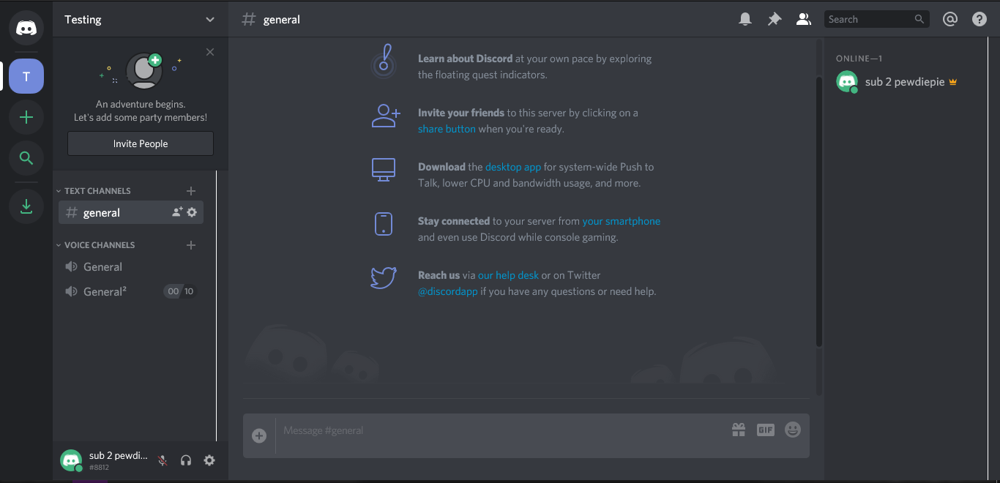
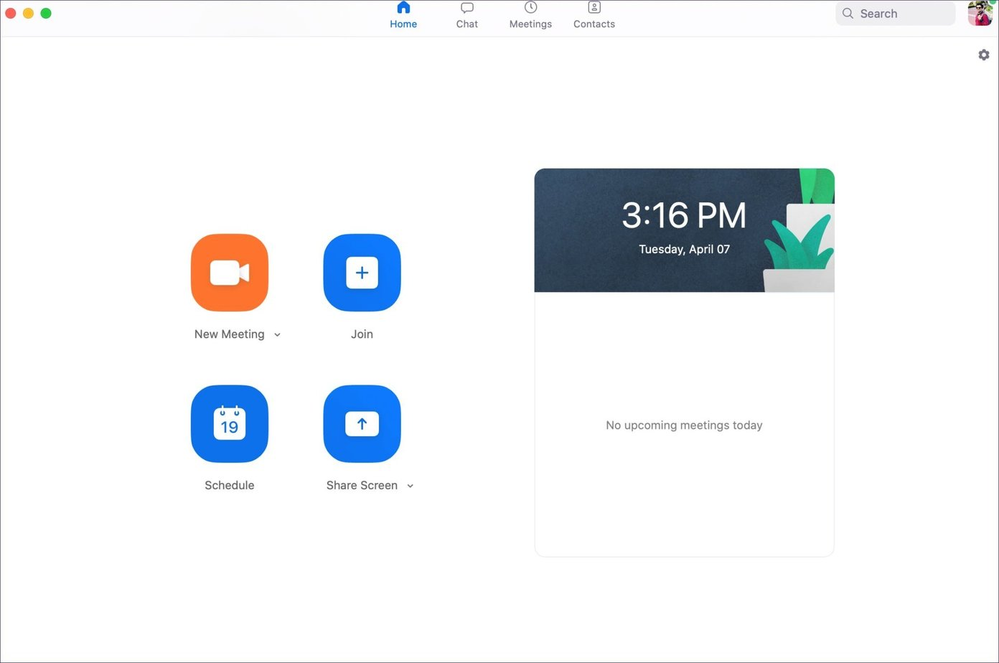
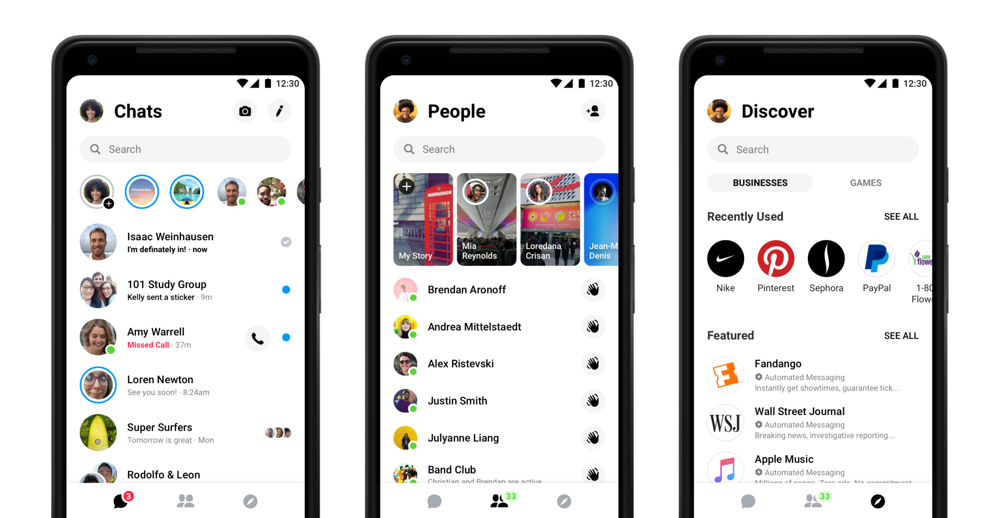
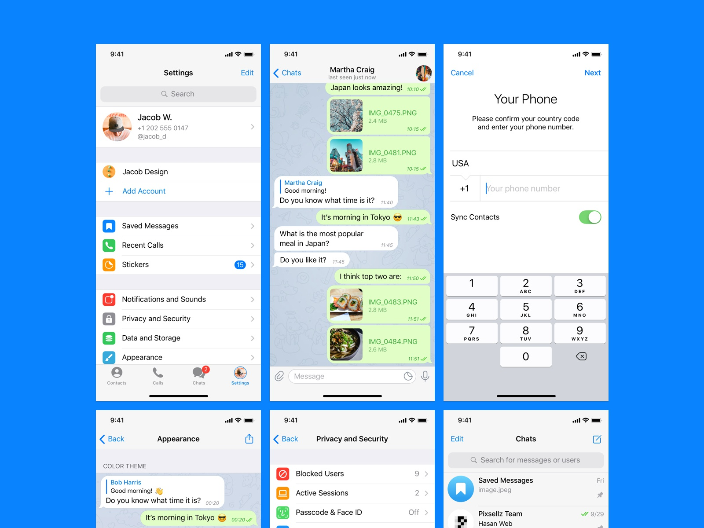

COVID-19
Dealing with a New Normal
Communicating with Others during Quarantine
Given the current circumstances, communicating with other has become much more difficult. To deal with this issue, we wanted to include a variety of ways that you can communicate with people whether it be for personal use, business, or education.
Discord
Discord is a text, audio, and video communication service that was first created as a "Chat for Gamers," but is now used as a "Chat for Communities and Friends." The main draw of Discord is the ability to create "servers" in which a multitude of people can comunnicate with each other. Rather than communicating individually with other people, Discord gives you the ability to create a community of people. I personally have discord servers for two of my friend groups as well as one for the UCSD Pokemon Go community. Along with the ability to create servers, Discord's low latency audio quality is one of the best in the industry for audio calls. Discord has also recently implemented screen sharing that can assist with productivity. If you are interested in using Discord, feel free to check it out!
Zoom
From the start of quarantine, Zoom has become a part of many of our lives as the primary video calling service that people are using in their daily lives. Zoom prides itself on being extremely intuitive and easy to use. Zoom calls are extremely versatile and can be used for many different purposes. Family and friends can use Zoom in personal video calls. Businesses can use Zoom in order to have meetings with employees, and Zoom employs a variety of tools such as screen sharing and remote controlling in order to accomplish work. Zoom is also being used in education to hold remote lectures for students in quarantine, hosting features that allow for interaction even from long distances. If you're interested in using Zoom for any of these purposes, you can check it out yourself!
Messenger
Messenger is a messaging app that was created as a part of Facebook. Messenger is very convenient to use because of the widespread use of Facebook already, making it easy to chat with friends and family. Along with just messaging, users can exchange photos, videos, stickers, audio files, and other files. Messenger also supports voice and video calling as well. Messenger provides an easy way to communicate with others, especially for the people in your life that may not be so tech savvy. I personally like using Messenger to send messages to family members and for making small group chats with friends or family. Go ahead and check Messenger out if you think it fits your needs.
Telegram
Telegram is a quick and simple messaging app with a focus in security. Telegram has the same bells and whistles as other messaging apps like stickers and gif support, but also implements various security functions. All messages sent in Telegram are encrypted, but if users want even more security, they can have "Secret Chats" that can be locked away with a password. There is also and option for "Secret Chats" where messages will disappear after an alloted amount of time that the users specify. Telegram is open source, which means that anyone can fix security flaws since it is peer reviewed in public. If you're interested using Telegram make sure to go see if it's what you're looking for.
